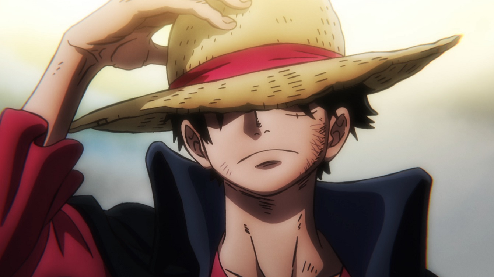
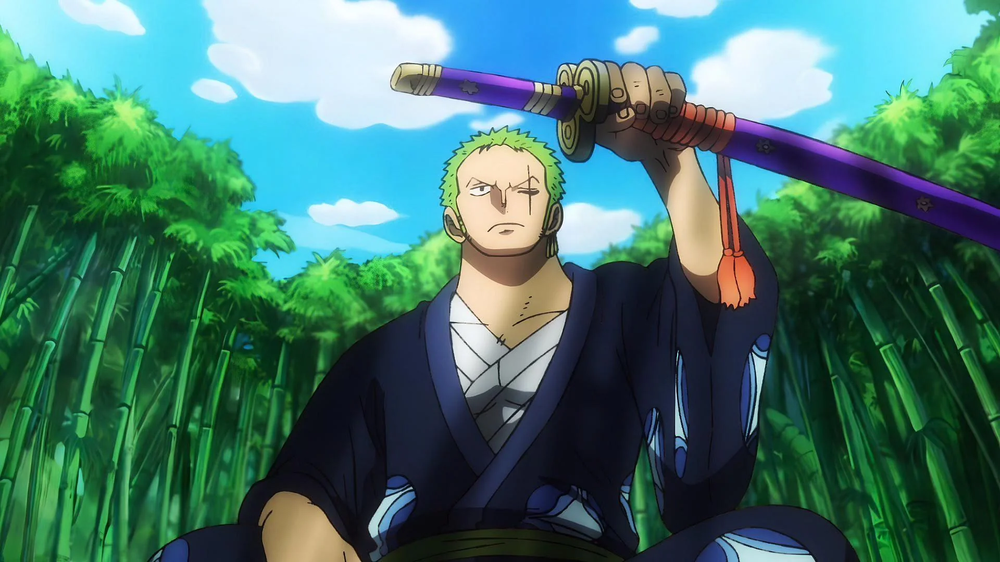
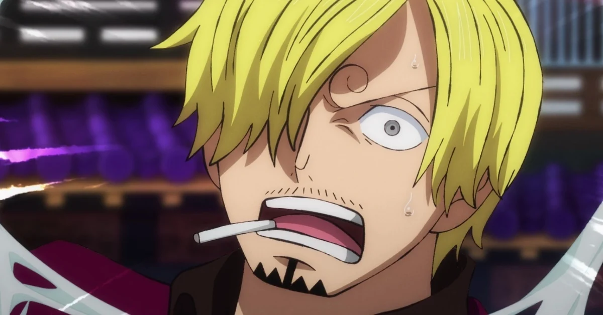
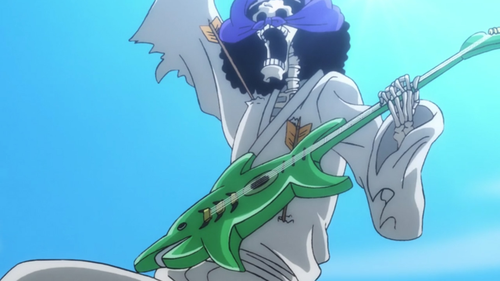

Monkey D. Luffy

Capitão do Bando, Luffy que sonha em se tornar o rei dos piratas,
junta seus companheiros e se joga nos mares em busca do maior tesouro
que existe, o One Piece.
- Cargo no Bando: Capitão
- Recompensa: 3 bilhões de Bellys
- Alcunha: " Chapéu de Palha"
- Sonho: Ser Rei dos Piratas
Roronoa Zoro

Braço Direito de Luffy, tem a ambição de ser o espadachim número 1,
cumprindo a promessa feita na infância.
- Cargo no Bando: Espadachim
- Recompensa: 1,111 bilhões de Bellys
- Alcunha: "Caçador de Piratas"
- Sonho: Ser o Maior Espadachim do Mundo
Jinbe
Mais recente membro do Bando, Jinbe é um experiente pirata Tritão que
se junta a Luffy rumo a conquistar a Grand Line.
- Cargo no Bando: Timoneiro
- Recompensa: 1,100 bilhõesde Bellys
- Alcunha: "Cavaleiro do Mar"
- Sonho: ?
Vinsmoke Sanji

Cozinheiro e amante das mulheres, é um dos mais antigos do Bando, é
uma das "asas" de Luffy rumo ao One Piece.
- Cargo no Bando: Cozinheiro
- Recompensa: 1,032 bilhões de Bellys
- Alcunha: " Perna Negra"
- Sonho: Encontrar o All Blue
Nico Robin
Unica sobrevivente de Ohara, encontra finalmente em Luffy e seu bando
um lar e amigos.
- Cargo no Bando: Arqueóloga
- Recompensa: 930 milhões de Bellys
- Alcunha: " Filha do Demônio"
- Sonho: Saber a verdade por trás do Século Perdido
Usopp
- Cargo no Bando: Atirador
- Recompensa: 500 milhões de Bellys
- Alcunha: "Deus"
- Sonho: Ser um Bravo Guerreiro do Mar
Franky
Um ciborgue experiente na arte de fazer navios, criador do Trousand
Sunny.
- Cargo no Bando: Capinteiro
- Recompensa: 394 milhões de Bellys
- Alcunha: "O Ciborgue"
- Sonho: Fazer o navio dos Sonhos
Brook

Soul King, navega junto a Luffy até o dia de reecontrar Laboom.
- Cargo no Bando: Músico
- Recompensa: 388 milhões de Bellys
- Alcunha: "Soul King"
- Sonho: Reencontrar Laboom
Nami
Se torna membra oficial do Bando após se livrar das garras malignas de
Arlong.
- Cargo no Bando:Navegadora
- Recompensa: 366 milhões de Bellys
- Alcunha: "A Gata Ladra"
- Sonho: Fazer um Mapa-Mundi
Tony Tony Chopper
Fiél e confiavel membro do bando.
- Cargo no Bando: Médico
- Recompensa: 1,000 mil Bellys
- Alcunha: "O Amante de Algodão-Doce"
- Sonho: Cura pra toda Doença


.jpg "Usopp One Piece")
.jpg "Franky One Piece")